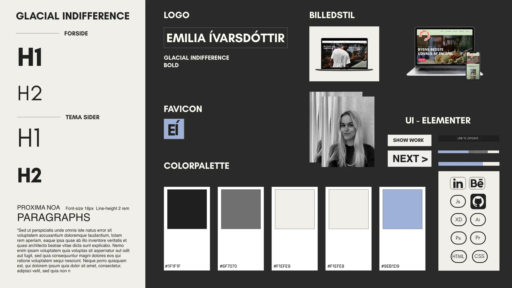

06
PORTFOLIO
PORTFOLIO

Dette tema er en eksamensopgave, hvor jeg har udviklet et portfolio website. Det præsenterer mine projekter fra det første semester. Jeg anvendte metoder og designudviklingsteknikker til at udarbejde sitet, testede det og kodet det i HTML, CSS og JavaScript.
IDÉ-GENERERING
Jeg begyndte min idé-generering med at oprette et mindmap for at nedskrive mine tanker og ideer. Jeg ønskede at bruge et simpelt og stilfuldt design, hvor fokus lå på mit arbejde. Det var vigtigt for mig at inkludere en portfolio-menu, da det giver en god oversigt over mine projekter, og man kan derefter klikke sig ind og se dem nærmere. Dernæst oprettede jeg en Trello, for at bevare et overblik og en struktur over mit arbejde.

DESIGNPROCESS
SKITSER
I skitseringsfasen startede jeg med at bruge Crazy 8-metoden til at illustrere mine layout-ideer. Derefter begyndte jeg at skitsere en prototype af mit portfolio site. Dette gav mig en grundlæggende vision at arbejde ud fra, når jeg senere skulle begynde at udvikle prototypen i Adobe XD.
SKITSE AF PROTOTYPE
SKITSE AF PROTOTYPE
CRAZY 8'S
MOODBOARD
I designprocessen oprettede jeg et moodboard for at visualisere den stil, jeg ønskede for mit site. Jeg ønskede at skabe en moderne minimalistisk stil, der var inspireret af et fotografportfoliosite. Jeg tilføjede et strejf af polaroid-elementer for at skabe en æstetisk fornemmelse.

STYLETILE
Jeg udarbejdede et styletile som designguide, der indeholdt farver, fonte, UI-elementer, logo og billedstil. Jeg valgte at bruge skarpe kanter til UI-elementerne, undtagen for ikonerne, for at opnå en ensartet visuel stil. Jeg valgte at bruge grundlæggende farver som sort og hvid, men ændrede den hvide til en knækket hvid og den sorte til en mørkegrå for at skabe et vintagelook. Desuden valgte jeg en meget lys lilla farve til hovereffekten på menuen for at illustrere, at det er et klikbart link. Denne lilla farve blev også brugt på indholdsfortegnelsen på hvert tema for at skabe ”consistency” og tydeliggøre, at de er klikbare links. Jeg har valgt at bruge Glacial Indifference som skrifttypen til alle overskrifter på mit site. Det er en sans-serif font, der har en neutral og minimalistisk stil, som jeg ønsker at inkorporere i mit design. Derudover er den også letlæselig, hvilket er vigtigt for en god brugeroplevelse. Jeg har brugt proxima nova til min brødtekst, som er en sans-serif font, på grund af dens høje læsbarhed, derudover bidrager den med et moderne og stilfuldt look til mit site.
WIREFRAMES
Jeg har uarbejdet wireframes i Adobe XD til både mobil og desktop-versionen af mit site. Mit fokus var at træffe beslutninger omkring layoutet. Jeg besluttede mig for kun at uarbjede én wireframe for alle temaer, da siderne alligevel skulle have det samme layout, for at opretholde en ensartethed og konsistens på tværs af sitet.

WIREFRAMES AF FORSIDE
WIREFRAMES AF PORTFOLIO MENU

WIREFRAMES AF TEMAER

WIREFRAMES AF OM/CV

WIREFRAMES AF KONTAKT
SITEMAP
Jeg udarbejdede et sitemap som en visuel repræsentation af strukturen på mit site. Formålet med sitemapet var at skabe et overblik over, hvordan siderne skulle være forbundet og hvilke sider der skulle føre til hinanden.

PROTOTYPE
Efterfølgende udarbejdede jeg forskellige prototyper til de forskellige sider på mit site. Disse prototyper blev brugt til at udforske og visualisere forskellige designmuligheder og layoutvariationer for hver side.

PROTOTYPE AF FORSIDE
PROTOTYPE AF FORSIDE

PROTOTYPE AF FORSIDE

PROTOTYPE AF MENU

PROTOTYPE AF MENU
PROTOTYPE AF TEMA

PROTOTYPE AF TEMA
PROTOTYPE AF OM + KONTAKT
TEST
5 SECOND TEST
HVAD FANGEDE DIN OPMÆRKSOMHED?
Billedet og overskriften.
HVAD HANDLER SITET OM?
Stilrent portfoliosite for en ung kvinde, med et æstetisk layout.
5 ACT INTERVIEW
Friendly welcome
Testen går ud på at teste prototypen af. Det er derfor ikke dig som bruger der bliver testet men derimod dig der tester prototypen af. Du skal klikke dig rundt på hjemmesiden og forstille dig at du er min underviser på 1. semester, og du skal se og opnå en forståelse af hvad jeg har lært i løbet af semesteret. Testen skal vise om hjemmesiden er brugervenlig/nem og navigere rundt i, og om UI konventionerne er forståelige. Derudover skal den teste, hvad brugeren lægger vægt på, samt hvad der fanger brugerens opmærksomhed.
Context questions
Hvad lægger du mest fokus på når kigger på portfolios?
•Hvordan layout og look erpå siden, men hovedsageligt cases, hvad de viser og fortæller. Vigtigt med visuelt udtryk og forklarende tekster.
Introduction
Du skal bevæge dig rundt og se det arbejde jeg har udført i 1. semester.
Tasks
1. Du lander på landing page.
2. Dernæst skal du ind på portfolio menuen og navigere rundt mellem de forskellige temaer.
3. Tilslut skal du ind og læse om mig og mit cv samt finde mine kontakt oplysninger.
Debrief
Hvad fungerede godt?
•Nem navigation
•Hurtigt overblik over projekter.
Hvad fungerede mindre godt?
•Navigere fra det ene projekt til næste.
Hvilke forbedringer kan der fortages?
•Tilføj knap til næste projekt, for nemmer eog hurtigere navigation mellem projekter.
Var der nogle ting der ikke gav mening?
•Nej
Hvad kiggede du på først?
•Forside og projekter.
Manglede der noget?
•Næste knap - hurtigere navigation.
Var der nogle ting der var mere interessante end andre?
•Portfolio og projekter.
Jeg oplevede stor værdi ved at implementere et Five Act Interviewet, da brugeren gentagne gange påpegede, at det var svært at navigere mellem forskellige temaer, især når de nåede bunden af siden og var færdige med at se det aktuelle tema. Som en løsning tilføjede jeg en "Næste" knap nederst på hvert tema, der hurtigt kunne føre brugeren videre til det næste tema.
KODE
Jeg brugte anchor i HTML til at oprette en indholdsfortegnelse, hvor jeg kunne linke til forskellige sektioner på siden. Jeg opnåede dette ved at bruge a-tags omkring mine h3-overskrifter og tilføje et unikt id med sektionens navn som en div ved starten af hver sektion. Dette gjorde det muligt at oprette klikbare links i indholdsfortegnelsen, der fører direkte til de tilsvarende sektioner på siden.
Til portfoliomenuen har jeg tilføjet et overlay-element kaldet "hover-content", der er positioneret absolut og fylder 100% af containeren for at skabe et overlay over billedet. Dette gør det muligt at vise navnet på temaet på billedet. Derudover har jeg oprettet et "span"-element i HTML'en, som indeholder den tekst, der skal vises, når hover-content er synligt.